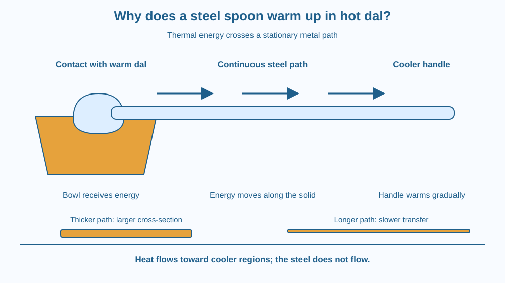

Follow thermal energy from warm dal into a spoon's handle. Explain conduction, distinguish heat from temperature, and predict how changing the spoon's material or shape changes the result. Your model must work even though the steel itself stays in place.
A spoon stands in a bowl of freshly served dal. Its bowl is under the dal, but its handle sticks into the air. After a while, the handle feels warm too. The dal has not climbed all the way to your fingers. No visible piece of steel has travelled from the bowl to the handle. Something has crossed the distance, however: energy.
Now imagine a wooden spoon beside it. Would the two handles warm at the same rate? This comparison reveals a property that matters when people choose cooking tools.
Temperature describes how hot or cold something is. Heat is energy transferred because there is a temperature difference. If the dal is hotter than the spoon, energy transfers from the dal to the spoon at their contact surface. The submerged part warms first.
Inside a solid, neighbouring particles interact. Energy introduced at one end can pass through those interactions to nearby regions. This transfer through material, without the bulk material flowing along the transfer path, is called thermal conduction.
Metals have another useful route for carrying energy: mobile electrons. These electrons can move through the metal and transfer energy through interactions. Both particle vibrations and electrons contribute, but electron transport helps explain why many metals conduct heat well.
The spoon does not need a battery or a closed electrical circuit for this to happen. There is no requirement for a net electrical current along the handle. Here, electrons help carry thermal energy within the metal. That is different from asking why an electrical circuit conducts charge.
The warmer region transfers energy toward the cooler region. Along the spoon, there is initially a temperature gradient: temperature changes with position. The submerged bowl is warmest; the far handle is cooler. Energy is transferred along this gradient toward cooler parts.
Three features influence the rate. A material with greater thermal conductivity transfers energy more readily for the same geometry and temperature difference. A thicker conducting path provides a larger cross-sectional area. A longer path slows transfer between its ends, all else being equal.
These are comparisons under controlled conditions. A thin aluminium spoon and a thick steel ladle differ in more than material. You cannot use their warming times alone to rank their conductivities. Shape, mass, starting temperature and contact with the dal also matter.
Meanwhile the handle transfers energy to surrounding air. Therefore its temperature depends on both energy arriving through the steel and energy leaving to its surroundings. It need not become as hot as the dal. If the whole meal cools, the temperature difference driving transfer also decreases.
Imagine a row of connected seats. A disturbance at one end can pass along the row even though the seats stay in their places. This captures one important feature of conduction: energy travels while the solid remains a solid.
Now add mobile messengers moving between the seats. They stand for electrons carrying energy in a metal. Neither part of the model means that a tiny parcel called “hotness” must travel intact from the dal to your fingers.
Draw four positions along a spoon. Mark their temperatures as warm, less warm, cooler and coolest. Put arrows between neighbouring positions pointing toward the cooler side. Those arrows represent energy transfer, not moving spoon material.
The SVG shows a warm bowl at the left and a metal spoon extending toward the right. Three arrows above the handle follow the direction of thermal energy transfer. The handle stays continuous and stationary.
Below the drawing, three separated labels identify the contact region, the conducting path and the cooler handle. A second strip illustrates changes in path thickness and length. Its arrows indicate that geometry affects transfer rate; they do not claim a measured rate for a real spoon.
Read the labels before following the arrows. The colours distinguish regions and do not act as a thermometer scale.

A steel karchhi can become uncomfortable to hold during cooking. A wooden grip lengthens and interrupts the easy conducting path to the hand. A handle may also be hollow or attached through a narrow connector. These design choices change how readily energy reaches the user.
A tawa often has a handle with a different material from its cooking surface. The surface should transfer heat into food; the handle should remain easier to hold. The best material depends on what each part must do.
Metal tools also feel cooler than wooden tools in the same room because metal can remove energy from a warm hand more rapidly. Feeling colder does not prove the metal started at a lower temperature.
Do this with an adult. Use comfortably warm tap water, never boiling water or a stove. You need a cup, a metal spoon and a wooden spoon.
Treat this as a qualitative observation. The spoons have different shapes and masses, so the activity does not measure conductivity accurately. No noticeable change is also a valid observation when the water is only mildly warm.
Suppose the far end of a metal rod is kept cool while the near end stays warm. Energy can keep passing through even if the temperature at each location becomes steady. A steady temperature does not necessarily mean that energy has stopped moving.
What must be true about energy entering and leaving a small section of the rod for that section's temperature to remain unchanged? Describe the balance using arrows of equal size.
What is conduction along a spoon?
Answer: A — Energy passes through the solid while its bulk material stays in place.
Why do many metals transfer heat readily?
Answer: B — Mobile electrons contribute to thermal energy transfer within metals.
For otherwise identical metal rods, which change slows transfer between their ends?
Answer: C — A longer path reduces the transfer rate for the same end-temperature difference.
Design a spoon for stirring warm food. Label the bowl, connector and grip. Choose which part should conduct heat readily and which part should slow transfer to the hand.
Explain one trade-off. A longer handle can increase the distance energy travels, but an extremely long handle may be awkward to use. Compare your design with a short all-metal spoon, keeping the amount of food and the initial temperature the same.
A metal spoon and a wooden spoon can have the same temperature yet feel different. Your skin responds to energy transfer as well as temperature. Touch is useful for noticing change, but it cannot reliably compare temperatures of different materials. This is why a thermometer answers a different question from “Which feels colder?”
Conduction carries thermal energy along a spoon from warmer regions to cooler regions, while the spoon's material stays in place.